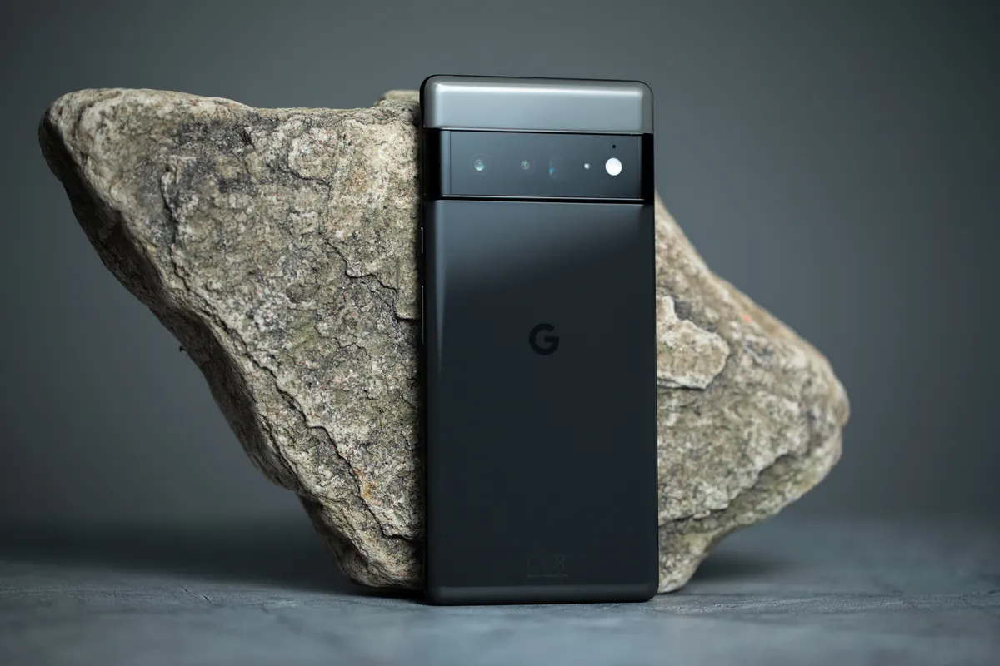

Pasa por nuestra mesa de análisis este Google Pixel 6 Pro,
para desgranar al completo la apuesta más ambiciosa de Google hasta la fecha,
y comprobar si está o no en la línea de lo que se pide a la gama alta,
teniendo en cuenta que el precio de partida es ligeramente inferior al de sus rivales directos.
La potencia de Pixel. Gracias a Google Tensor, el primer procesador diseñado por Google.
Una batería que te encantará. Su batería dura todo el día, se carga rápido, se adapta a ti y ahorra energí.
Pixel 6 Pro vienen con un conjunto completamente nuevo, pero claramente pertenecen a una sola familia. En particular,
la parte posterior con la barra de cámara continua no puede ocultar la relación y también asegura que los Pixel 6 sean estables sobre la mesa.

Cosas malas del iphone
El primer Google Pixel.
Google ha traído a España sus Google Pixel 6 y Google Pixel 6 Pro,
sus dos nuevos exponentes en la gama alta.
El hermano mayor es más grande, tiene más resolución y una cámara más completa para aspirar a entrar en la lista de mejores móviles de 2022.
A priori, debería ser suficiente para ganarse el título de 'Pro',
aunque el camino hacia este apellido no es tan fácil.